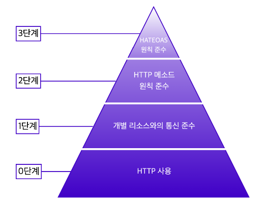

API(Application Programming Interface)는 서버가 클라이언트에게 리소스를 잘 활용할 수 있도록 인터페이스(interface)를 제공해 주는 것을 말한다.
정부에서 제공하는 공공데이터에 쉽게 접근할 수 있도록 정부는 Open API의 형태로 공공데이터를 제공하고 있다.
공공데이터 포털에 접속해 원하는 키워드를 검색하여 해당 키워드와 관련된 API를 확인할 수 있다.
API를 이용하기 위해서 API Key가 필요한 API도 존재한다.
로그인된 이용자에게만 자원에 접근할 수 있는 권한을 API Key의 형태로 제공하고 데이터를 요청할 때 API key를 같이 전달해야만 원하는 응답을 받을 수 있다.
REST API는 웹에서 사용되는 데이터나 자원(Resource)을 HTTP URI로 표현하고 HTTP 프로토콜을 통해 요청과 응답을 정의하는 방식이다.
REST API를 작성할 때는 몇 가지 지켜야 할 규칙들이 있는데 로이 필딩이 논문에서 제시한 REST 방법론을 보다 더 실용적으로 적용하기 위해 레오나르드 리차드슨은 REST API를 잘 적용하기 위한 4단계 모델을 만들었다.

REST 성숙도 모델은 총 4단계(0 ~ 3단계)로 나누어진다.
로이 필딩은 이 모델의 모든 단계를 충족해야 REST API라고 부를 수 있다고 주장했지만 엄밀하게 3단계까지 지키기 어렵기 때문에 2단계까지만 적용해도 좋은 API 디자인이라고 볼 수 있고 이런 경우 HTTP API 라고도 부른다.
0단계에서는 단순히 HTTP 프로토콜을 사용하기만 해도 된다.
해당 API를 REST API라고 할 수는 없지만 0단계는 좋은 REST API를 작성하기 위한 기본 단계이다.
1단계에서는 개별 리소스와의 통신을 준수해야 한다.
즉, 모든 자원은 개별 리소스에 맞는 엔드포인트(Endpoint)를 사용해야 한다는 것과 요청하고 받은 자원에 대한 정보를 응답으로 전달해야 한다는 것이 1단계에서 의미하는 바이다.
엔드포인트 작성 시에는 동사, HTTP 메서드 혹은 어떤 행위에 대한 단어 사용은 지양하고 리소스에 집중해 명사 형태의 단어로 작성하는 것이 바람직한 방법이다.
더불어 요청에 따른 응답으로 리소스를 전달할 때에도 사용한 리소스에 대한 정보와 함께 리소스 사용에 대한 성공/실패 여부를 반환해야 한다.
2단계에서는 CRUD에 맞게 적절한 HTTP 메서드를 사용하는 것에 중점을 둔다.
3단계는 HATEOAS(Hypertext As The Engine Of Application State)라는 약어로 표현되는 하이퍼미디어 컨트롤을 적용한다.
3단계의 요청은 2단계와 동일하지만 응답에는 리소스의 URI를 포함한 링크 요소를 삽입하여 작성한다는 것이 다르다.
이때 응답에 들어가게 되는 링크 요소는 응답을 받은 다음에 할 수 있는 다양한 액션들을 위해 많은 하이퍼미디어 컨트롤을 포함하고 있다.